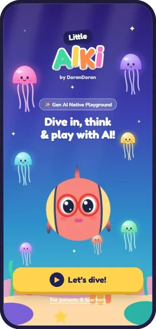
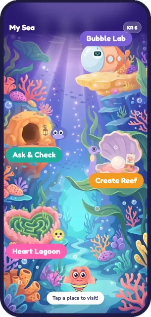
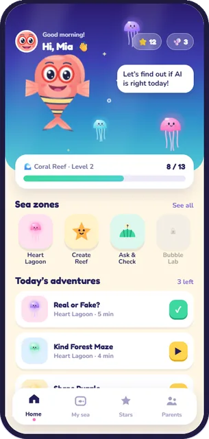

AI for kids · 2026
Little AIKi
아이들의 주도성과 창의성을 키우는 생성형 AI 네이티브 놀이터 · DoranDoran



단순한 게임이 아닙니다. 경제협력개발기구(OECD)·유럽연합(EU) AI 리터러시 프레임워크와 AI4K12를 바탕으로 한 커리큘럼을, 안전하고 쉽고 재미있는 놀이로 만들었습니다.
결과약 30가정과 웹 프로토타입 파일럿 진행, 2026년 9월 X, The Moonshot Factory (Google X) 피치 선발.
케이스 스터디 펼치기
문제
아이들은 AI에 질문할 줄 알기도 전에 AI를 만납니다. 이 연령대의 인기 앱은 글자와 숫자를 가르치지만, 기계가 왜 그렇게 답했는지 묻는 법을 가르치는 앱은 없습니다.
연구 기반
모든 구역과 모험은 검증된 AI 리터러시 커리큘럼에 매핑되어 있습니다. 게임은 내용이 아니라 전달 방식입니다.
- OECD/European Commission AI Literacy Framework (2026) ↗AI와 상호작용하고, AI로 만들고, AI를 관리하는 역량
- AI4K12 grade-band progressions ↗유치원~초등 2학년(K–2) 수준의 Big Ideas 1–5
- PopBots, Association for the Advancement of Artificial Intelligence (AAAI) 2019 ↗직접 해보는 놀이로 어린아이에게 AI 가르치기
- Druga et al., Interaction Design and Children (IDC) 2017 ↗아이들이 AI 에이전트를 인식하고 대화하는 방식
AI Literacy (AILit) content: OECD/European Commission (2026), Empowering Learners for the Age of AI, Creative Commons Attribution 4.0 (CC BY 4.0). This is an adaptation by DoranDoran; the adaptation is not endorsed by the OECD or the European Commission.
과정
- Others–Self–AI(OSA) 프레임워크 설계: 타인(Others), 나(Self), AI 순서로 편향을 알아차립니다.
- 5가지 윤리 기둥을 3개 연령대에 매핑했고, 첫 단계는 5–6세용으로 만들었습니다. 동작 하나에 행동 하나, 짧은 음성 대사, 글을 읽지 않아도 되는 구성입니다.
- 벌점도 낙인도 없습니다. 아이들은 동반 캐릭터와의 소크라틱 대화로 스스로 돌아봅니다.
- EU AI Act와 미국 아동 온라인 개인정보 보호법(COPPA) 요구사항을 디자인 규칙으로 바꿨습니다. 데이터 수집부터 AI 동반 캐릭터의 말하는 방식까지 포함합니다.
핵심 결정
다섯 살 아이에게 "편향됐다"고 말해서는 안 됩니다. 대신 동반 캐릭터가 아이의 선택을 질문으로 되돌려줍니다.
편향 라벨 대신 "큰 친구를 자주 골랐어요"처럼 써서, 부모가 리포트를 아이에 대한 판정으로 읽지 않게 했습니다.
파일럿에서는 부모에게 국가와 아이 나이만 물었고, 다른 가정의 결과는 볼 수 없습니다.
시각 피드백은 즉시 나오고, AI가 만드는 대사가 0.5초 넘게 걸리면 건너뜁니다.
결과
이전 버전(Wisdom Island)으로 약 30가정과 웹 프로토타입 파일럿을 진행했고, 부모에게는 국가와 아이 나이만 받았습니다. TUM Venture Labs를 통해 교육 분야 문샷을 탐색하는 X, The Moonshot Factory (Google X) 피치에 선발되었습니다(2026년 9월).
왜 중요한가
5년 안에 대부분의 아이는 글을 읽기 전에 AI와 대화하게 될 것입니다. 그저 쓰는 것이 아니라 질문할 수 있어야 합니다. Little AIKi는 다섯 살부터 그 습관을 길러줍니다.
다음 단계
프로토타입의 고정 규칙을 적응형 대화 엔진으로 바꾸고, 규제 규칙을 국가별로 설정할 수 있게 하며, 아이들이 선택지를 고르는 대신 소리 내어 이유를 말하게 할 계획입니다.